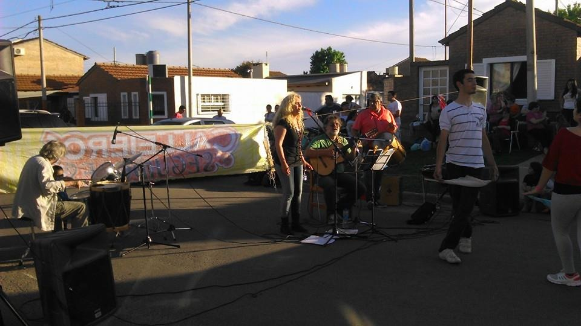
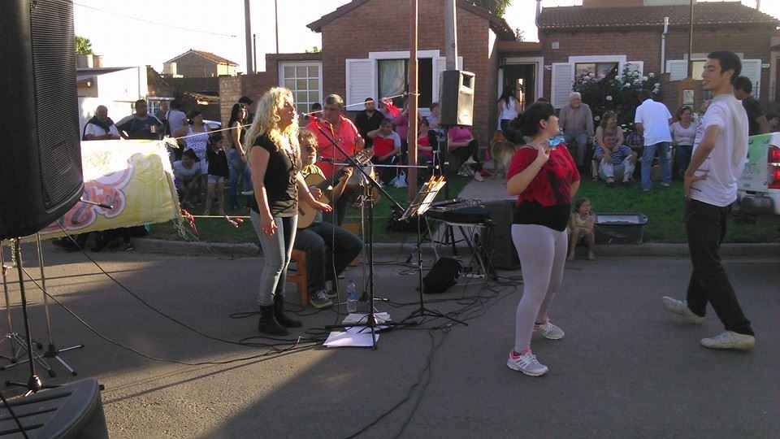
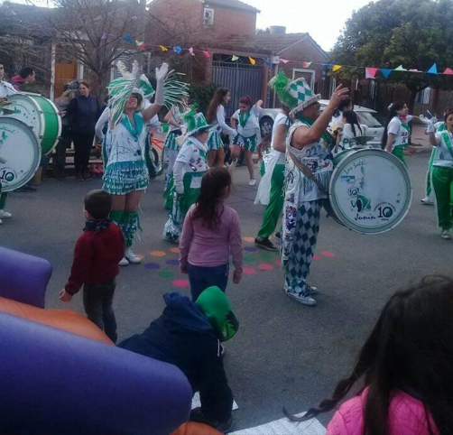
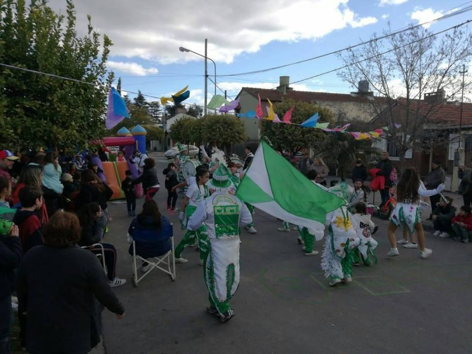
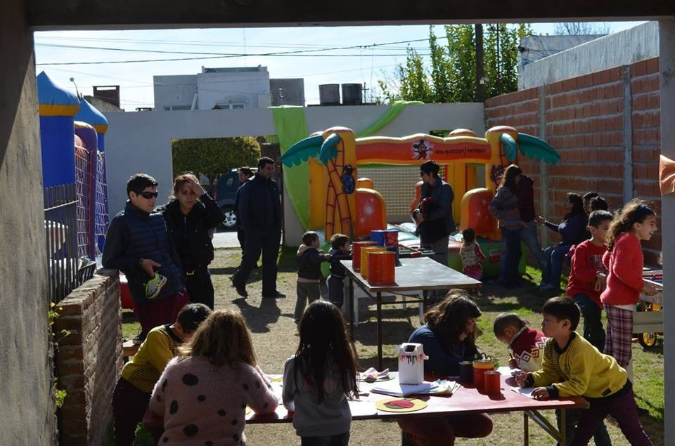
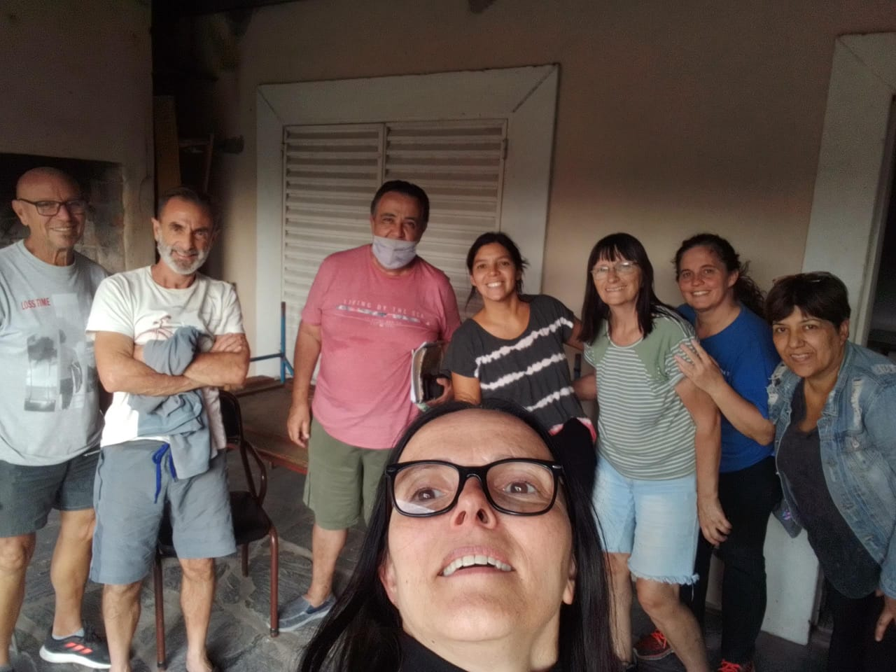

La Sociedad de Fomento de fiesta
 Cada día festivo, como es costumbre, la Sociedad de Fomento Gregorio González participa haciendo extensiva la invitacion a los miembros de la comunidad, exponiendo trabajos realizados en los distintos talleres comunitarios, participación de números artísticos, recaudando fondos a través de la venta de tortas, pastafrolas, pizzas, etc. 




En busca de fondos

Ya estamos en la etapa final del salón de la sede de la sociedad de Fomento con la colocación del cielorraso.
Sólo nos queda arreglar las paredes del baño y las maderas de las puertas ya están compradas. Por eso este viernes 22 de sep. hacemos PIZZAS listas
para el horno o para frizar.
"A seguir aunando esfuerzos y sumando para vivir en un lugar siempre mejor." Soc de Fomento Gregorio González.